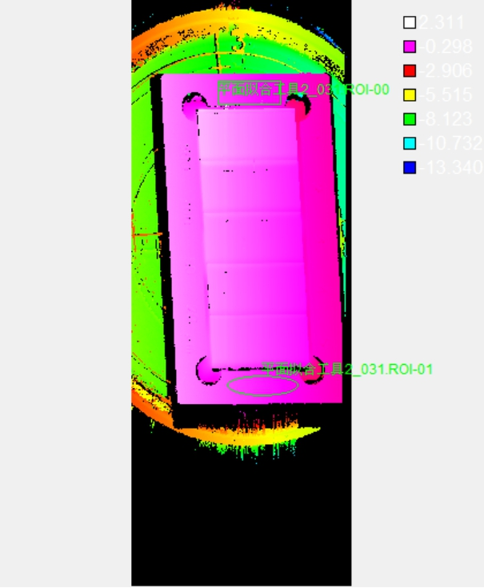
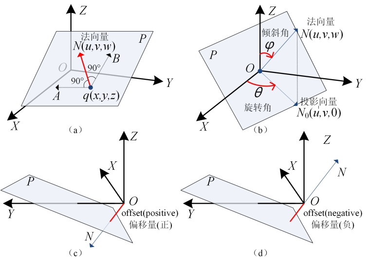

Trong đo lường 3D, thường cần thực hiện khớp các điểm không gian ba chiều trong vùng phát hiện của ảnh chiều sâu để thu được một mặt phẳng tối ưu, từ đó có thể thực hiện các thao tác tiếp theo như chiếu, đo chiều cao và đo thể tích trên mặt phẳng cơ sở này. Công cụ khớp phẳng 2 chủ yếu dựa vào một số điểm không gian ba chiều để tính toán biểu thức giải tích của mặt phẳng ba chiều.
Hình 1 là sơ đồ công cụ khớp phẳng 2. Trong công cụ khớp phẳng 2, có thể cấu hình hình dạng và đặc trưng của vùng khớp mặt phẳng. Như Hình 1 cho thấy, tổng cộng có hai vùng khớp, hình dạng của hai vùng này lần lượt là hình chữ nhật và hình elip. Có thể sử dụng các điểm đặc trưng trong hai vùng này (như giá trị trung bình, trung vị, v.v.) hoặc toàn bộ dữ liệu để khớp mặt phẳng. Công cụ khớp phẳng 2 hỗ trợ cho sự đa dạng hóa cách thức hình thành mặt phẳng cơ sở trong các dự án thực tế.

| Phân loại | Tên tham số | Mô tả tham số |
|---|---|---|
| Cửa sổ thuộc tính | Hướng mặt phẳng | Được chia thành hai loại: không gian pixel dương và không gian pixel âm. |
| Số lượng ROI | Tham số này chỉ định số lượng ROI dùng để khớp mặt phẳng, hỗ trợ tối đa 100 ROI. | |
| Chỉ số ROI | Tham số này dùng để chọn vùng khớp thứ i và thiết lập tham số cho nó. | |
| Loại ROI | Vùng cần khớp, được chia thành 7 loại: toàn bộ ảnh, hình chữ nhật, hình chữ nhật affine, hình tròn, đoạn vòng tròn, elip, đa giác. | |
| Điểm khớp | Chọn một loại điểm đặc trưng trong vùng ROI để thực hiện khớp mặt phẳng, được chia thành 6 loại: giá trị trung bình, trung vị, trọng tâm, Z lớn nhất, Z nhỏ nhất, toàn bộ dữ liệu. | |
| Giới hạn trên, dưới của khoảng | Dữ liệu chiều sâu của vùng khớp được sắp xếp theo thành phần Z từ nhỏ đến lớn, sau đó lấy giá trị trung bình, trung vị hoặc các điểm đặc trưng khác của dữ liệu chiều sâu nằm trong khoảng start% ~ end%. Phạm vi giá trị: giới hạn dưới [0,100), giới hạn trên (0,100], và giới hạn dưới nhỏ hơn giới hạn trên. |
|
| Cửa sổ ảnh | Ảnh chiều sâu | Hiển thị ảnh chiều sâu cần phát hiện, hiển thị dưới dạng ảnh giả màu. |
| Vùng khớp | Hiển thị vùng cần khớp trên ảnh. | |
| Chuỗi dữ liệu | Ảnh chiều sâu | Đầu vào ảnh chiều sâu cần phát hiện. |
| Biến đổi tuyến tính 2D | Biến đổi tịnh tiến, xoay, thu phóng của mục tiêu so với mẫu. | |
| Giao diện nâng cao | Không | Không |
| Phân loại | Tên tham số | Mô tả tham số |
|---|---|---|
| Cửa sổ giám sát | Ảnh chiều sâu | Chiều dài rộng và kích thước pixel của ảnh chiều sâu, cũng như tham số dữ liệu chiều sâu. |
| Mặt phẳng khớp | Kết quả khớp mặt phẳng đầu ra, bao gồm vector pháp tuyến của mặt phẳng, độ lệch, góc nghiêng, góc xoay. |
|
| Độ phẳng | Độ phẳng của mặt phẳng đầu ra, tức là độ lệch lớn nhất trừ độ lệch nhỏ nhất. | |
| Lỗi khớp | Lỗi khớp của mặt phẳng đầu ra. | |
| Số điểm khớp mặt phẳng | Số điểm tham gia vào khớp mặt phẳng đầu ra. | |
| Kết quả thực thi | Kết quả thực thi của công cụ. | |
| Thời gian thực thi | Thời gian thực thi của công cụ. | |
| Cửa sổ ảnh | Ảnh đầu ra | Hiển thị ảnh chiều sâu đã phát hiện, hiển thị dưới dạng ảnh giả màu. |
| Chuỗi dữ liệu | Giống tham số cửa sổ giám sát, cung cấp cho công cụ tiếp theo sử dụng. |
Giả sử phạm vi khoảng là [start%, end%], thì chỉ có dữ liệu nằm trong phạm vi khoảng mới là hợp lệ; như Hình 2 cho thấy, khi cấu hình tham số cho vùng khớp, dữ liệu chiều sâu trong vùng được sắp xếp theo thành phần Z từ nhỏ đến lớn, sau đó lấy giá trị trung bình, trung vị hoặc các điểm đặc trưng khác của dữ liệu chiều sâu nằm trong khoảng start% ~ end%.

Vector pháp tuyến：Vector N vuông góc với mặt phẳng, biểu thị hướng của mặt phẳng trong không gian ba chiều, như Hình 3(a) cho thấy.
Góc nghiêng：Góc φ giữa hướng dương trục Z theo chiều kim đồng hồ với vector pháp tuyến N của mặt phẳng, phạm vi giá trị：[0,π] ，như Hình 3(b) cho thấy.
Góc xoay：Góc θ giữa hướng dương trục X theo chiều ngược kim đồng hồ với vector chiếu N0 của vector pháp tuyến, phạm vi giá trị：[0, 2π) ，như Hình 3(b) cho thấy.
Độ lệch：Khoảng cách lệch khi di chuyển gốc tọa độ đến mặt phẳng hiện tại P, nếu hướng di chuyển trùng với hướng vector pháp tuyến thì độ lệch là dương; ngược lại là âm, như Hình 3(c)、(d) cho thấy.

Bước 1 Cài đặt vùng khớp
Chủ yếu cần cài đặt số lượng vùng khớp, hình dạng, loại điểm đặc trưng trong vùng và phạm vi khoảng. Trong đó, người dùng có thể tự chỉ định số lượng ROI dùng để khớp; hình dạng vùng khớp được chia thành 7 loại: toàn bộ ảnh, hình chữ nhật, hình chữ nhật affine, hình tròn, đoạn vòng tròn, elip, đa giác; loại điểm đặc trưng trong vùng khớp được chia thành 6 loại: giá trị trung bình, trung vị, trọng tâm, Z lớn nhất, Z nhỏ nhất, toàn bộ dữ liệu.
Bước 2 Thực hiện khớp và xuất kết quả
Sau khi đã cài đặt vùng khớp, có thể thực hiện khớp mặt phẳng, kết quả đầu ra bao gồm: vector pháp tuyến của mặt phẳng, độ lệch, góc nghiêng và góc xoay, lỗi RMS của phép khớp, cũng như số lượng điểm ba chiều được sử dụng để khớp mặt phẳng.
参见“\Samples\3D\深度图\3D测量工具.gvp”。